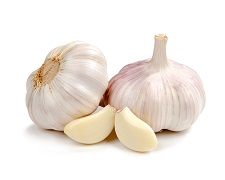
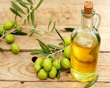
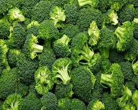

Healthy Foods
Garlic

|
Garlic has antibacterial, antifungal and antiviral properties. Most of its disease-fighting potential comes from its sulfur compounds, which act as antioxidants, providing many of its cardiovascular benefits. Just six or more cloves of garlic a week can slash your risk of colorectal, stomach and prostate cancer in half compared to eating one clove a week or less.
How much? Incorporate at least one garlic clove into your diet every day.
Tip: Chop or crush your garlic, then let it stand for 10 minutes to fully release its healing potential.
|
Olive oil

|
Press an olive and you get one of the healthiest fats in the world. The main benefit of olive oil is that it lowers “bad” LDL cholesterol and raises “good” HDL cholesterol, thanks to its monosaturated fats. Olive oil is also packed with antioxidants called phenols, which may protect artery walls from cholesterol buildup.
How much? Include up to 1 tablespoon (15 mL) of olive oil in your diet every day.
Tip: Look for “virgin,” “extra virgin” or “cold-pressed” oils, which are extracted by pressing alone. Solvents and heat used to produce “light or “extra-light” oils destroy antioxidants.
|
Broccoli

|
Consider broccoli your number one cancer fighter, thants to its sulfur compounds, such as sulforaphane, which you can smell as broccoli cooks. These compounds signal our genes to boost production of enzymes that detoxify potentially cancer-causing compounds. Eat more broccoli and you could slash your risk of everything from breast and lung cancer to stomach and colon cancer.
How much? 125 mL (1/2 cup) of cooked broccoli is one fruit and vegetable serving.
Tip: Steam broccoli for 3 to 4 minutes until it’s crisp-tender to free up more of its sulforaphane.
|
|
This information is excerpted from: http://www.besthealthmag.ca/best-you/arthritis-and-pain/10-foods-you-should-eat-every-day?slide=1 |
|
|